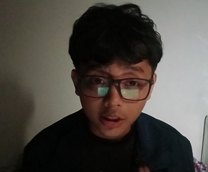
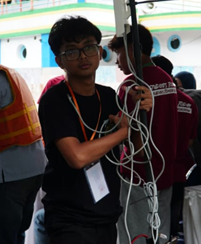
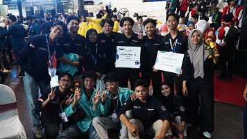
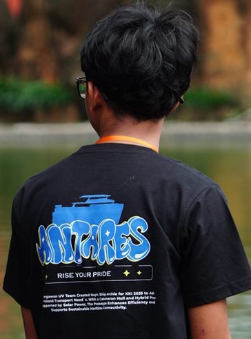

I'm Fadhil Rusadi, an Informatics student at Universitas Sebelas Maret (UNS). I enjoy learning by building real projects, especially in software development and autonomous systems.
Currently, I'm part of the Bengawan Unmanned Vehicle Team, where I work on programming and system development for autonomous surface vessels. I'm also involved in developing a monitoring system to observe and analyze vessel performance, helping bridge software, sensors, and real-world operations.
LANGUAGE & FRAMEWORK
HTML | CSS | Tailwind | MySQL
TOOLS
Visual Studio Code | Figma | GitHub
MACHINE LEARNING
YOLO | Python
2024 – Present
Developed a web-based monitoring system for an Autonomous Surface Vessel (ASV) to track and visualize vessel data during operation. This system supports monitoring, analysis, and evaluation of ASV performance in real-world environments.
Tailwind CSSDeveloped an object detection system using a YOLO-based machine learning model for camera sensor data on the ASV.
YOLO2024 – Present
Currently pursuing a Bachelor of Informatics degree with a focus on software development, systems, and project-based learning.
2021 – 2024
Completed high school with a focus on science, building a foundation for further studies in computer science and engineering.